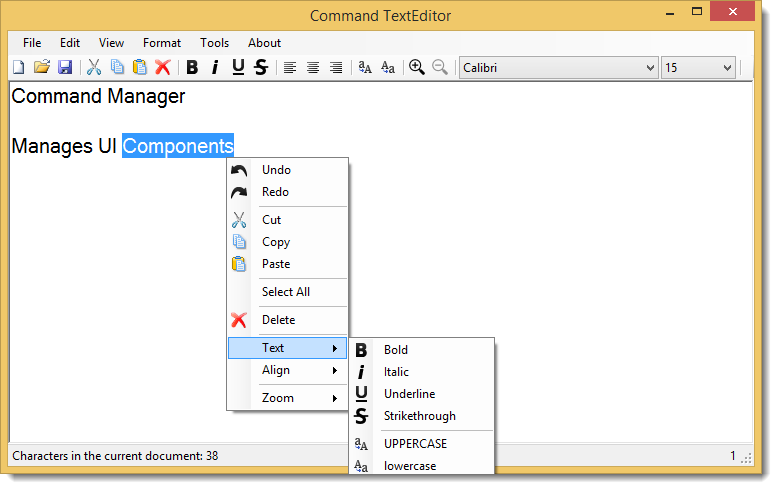

Command Manager is comprised of two major two WinForms components:
Command Manager - A WinForms component that determines whether an application is idle and updates the User Interface (UI), enabling , disabling and displaying user interface controls as needed using a list of commands.
Application Idle - A WinForms component that determines whether an application has received any defined ActivityMessages for a specified TimeSpan.
Included is a example Application to demonstrante some of the Command Manager and Application Idle features. For quick reference see Sample Code.
Licensed under GPL-3.0
